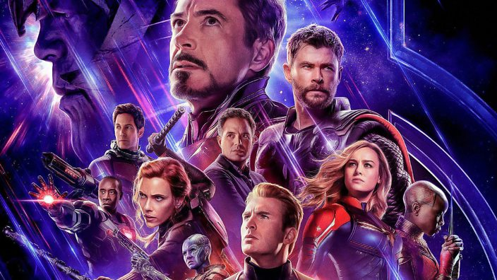
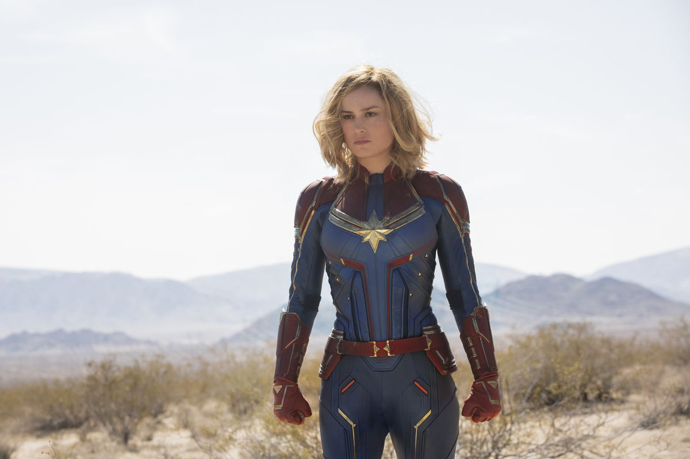
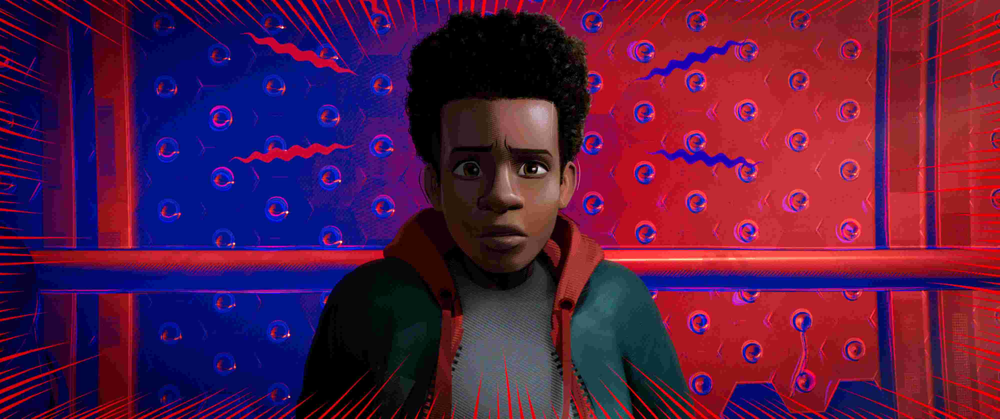
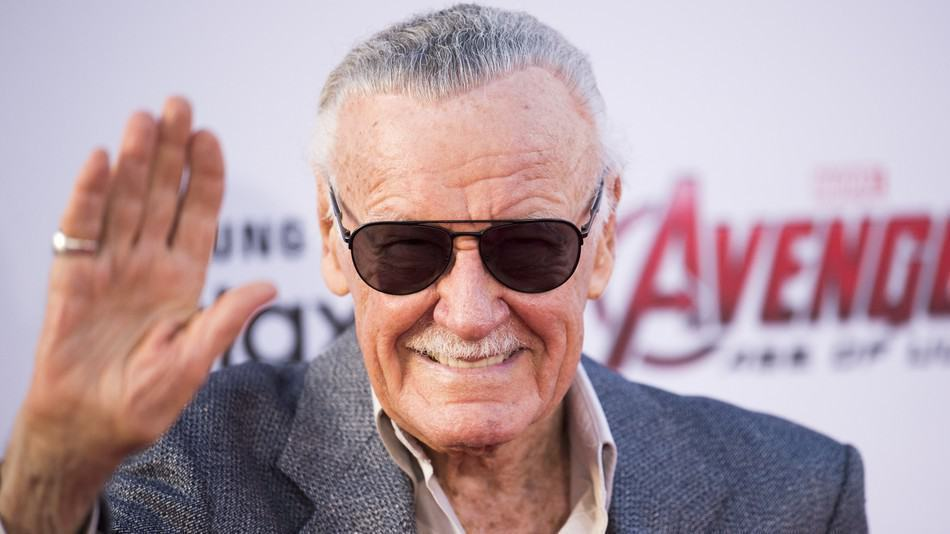
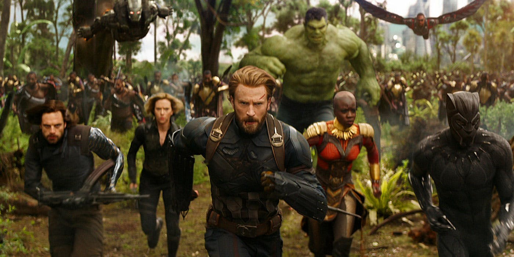
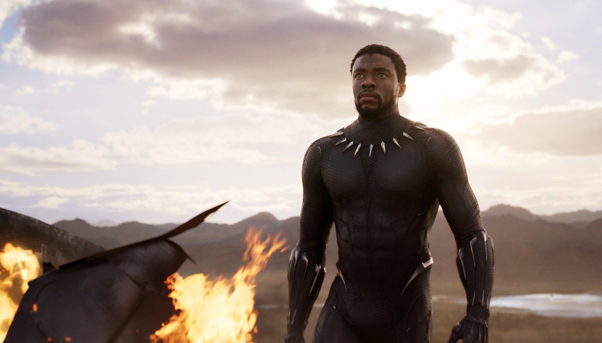
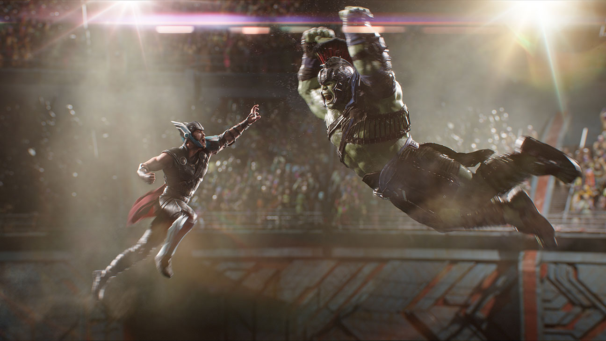
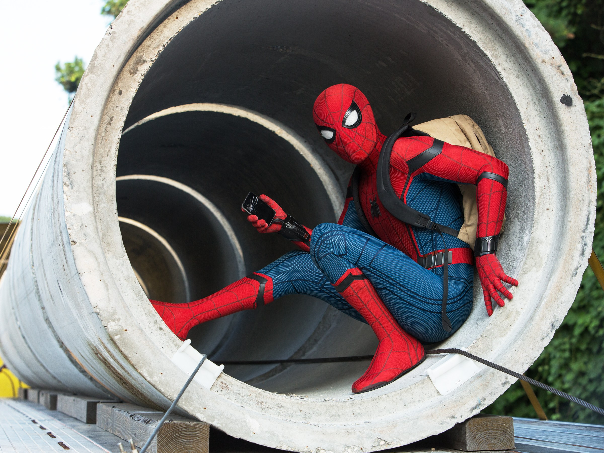

MARVIES
Avengers: Endgame Is Not Just A Movie Its Emotions
Avengers: Endgame is not just a movie its it’s an emotion and expression from the last 10 years in MCU. From the start of Phase 1 in Mcu in 2008 with Iron-Man to 2019 Captain Marvel its all about how the character is develop. And how they work together to over come their biggest Failure from Infinity war. Its the highest grossing film of the era crossing over James Cameron Avatar.
The movie start with the heros looking for Thanos after the Snap in Infinity war, so that they can take revenge over him. They found him and found out that he had already destroyed the infinity stones so they are hopeless on getting their friend back and kill Thanos by chopping his head off. Then the movie goes 5 years after, all the superheroes are looking the way to get all of them back. And Ant-Man who is in Quantum Realm come back and talk about the time travel as the time work differently in Time Vortex. With the concept of that Tony become able to create Time Heist so that they goes to the past and collect all the Infinity Stones. Movies then start with emotionally connected and giving the felling of all the Movies from past as the collection of stone and it is really awesome. And after the collection of all the stones they are able to snap and bring their friends back. And the last Battle happen between the Heros and Thanos army as the young Thanos does the time travel and this time with sacrifies of Iron_Man during snap they become able to win over him. With the end of movie Tony(Iron-Man) and Natasha(Black Widow) got dead and with their sacrifies they are able to win over Thanos.
Captain Marvel: One Of Most Powerful And First Female Super Hero
Marvel Cinematic Universe take about 10 years and 21 movies to introduce their first female superheroes in their cinematic universe. And they introduce as the most powerful superhero they ever produce in the span of 10 years. she can travel in Cosmos in Earth and even In Quantum Realm. She as the ability of greatest strength and can go wherever she want. Just defeated the whole Ronin Crew single handed.
MCU is actually looking for the right moment to introduce their best weapon on the cinematic universe at the most needed situation. When the Thanos Snap In Infinity War the half of population gone vanish and everybody is looking for what happen and want revenge with Thanos to reverse the process. And its the best time to introduce the most strongest weapon who can fight the Thanos one on one. In the Movie Captain Marvel its all about the origin and how a simple lady become the most powerful super hero and how she got all her powers. Along with that they introduce different species not new but kind of firstly introduce in universe as Skrull. Which is introduce as the bad character in the beginning and turns out to be the good one at the last. And then the movie revels about the Nick Fury's eyes. And we get a chance to know why he send message to Captain Marvel after the Snap Of Thanos.
Spider-Man: Into The Spider-Verse One Of Revolutionary Animated Movie In Animated Marvel
Spider-Man is the most famous and popular character in marvel universe. And marvel decided to make the most anticipated animated movie with more than one Spider-Man which make the Revolutionary change in the sector of animated movies. From the developing of character as a young boy who is talented and loved by family. How he become Spider-Man and how he know about his powers all designed and showed in perfect ways. Lots of responsibility comes with power and have to face bigger problem on saving world comes with that. And catchup of different Spider_man from different universe and different cities and how they work together is in this movie.
Movie start with the young boy going to the boarding school and his cop dad is living him to the school. Talented and bullied by friends as the Spider-Man movie, and he got bit by spider and he got the ability of sticking nd web. Then how he know his powers and how to use them in the right situation. During the time he meet with lots of other Spider-man from different universe and cities and they all work together to defeat the one who open the black hole. And the boy start to know that lots of responsibilities also get attached with him with the powers. So he start to stood up in every situation and be calm and cool knowing the powers so that he can apply when the needed most. Finally they become able to close the hole and and they all gone to their respective universe and the boy become more responsible.
Stan Lee: He Is Everythings To Marvel Universe

Avengers: Infinity War Failure before the Success

Black Panther It Make MCU Richer And Popular Both Agree?

Thor: Ragnarok Make Us Smile And Sad Even With Story Saga

Spider-Man: Homecoming Makes The Best Entry Of New Character
